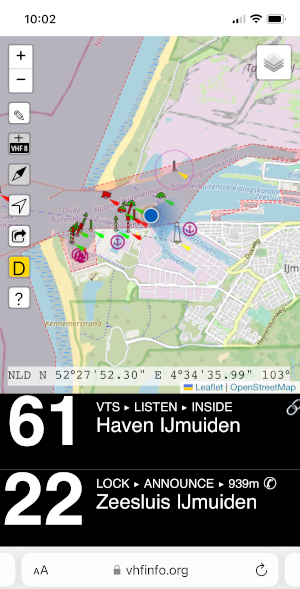
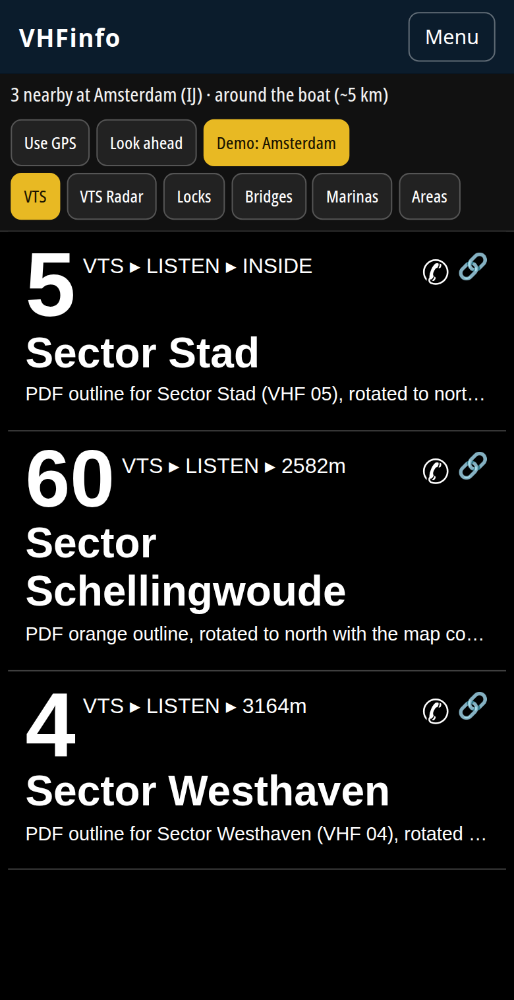
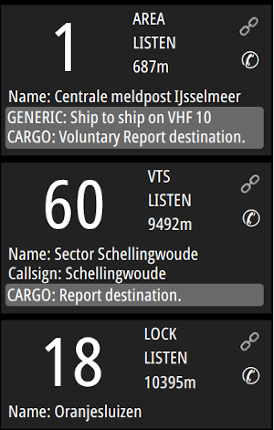
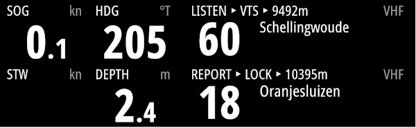

Map
The mobile-friendly map uses your phone’s GPS so you can see which channels are nearby — or ahead of you, if the compass is available.

Lookup the channel for a bridge, lock or VTS without digging through PDFs — especially when you cross a border. Open data, on a map or as a cockpit-style nearby list.
The mobile-friendly map uses your phone’s GPS so you can see which channels are nearby — or ahead of you, if the compass is available.

Need the channels without a map? The nearby page is a high-contrast list like the SignalK plugin: huge channel numbers, type, listen/announce/report, and distance.

The SignalK VHFinfo plugin uses your boat’s GPS and heading, including offline. Configure the search beam length and angle, then show the same list on your phone or a custom instrument display.

Pair the plugin with signalk-instrument-display-plugin to put the same VHF info on any browser display in the cockpit.

Open the map, find the area, and press the pencil button. You will be asked to sign in (a link in your email — no password). You stay on the same map: click an area to change it, or draw a new one.
Questions or comments: contact@vhfinfo.org.
VHFinfo.org is a privately run effort to make VHF data easy to use. If you appreciate it and want to contribute with a donation, you can use one of these options: